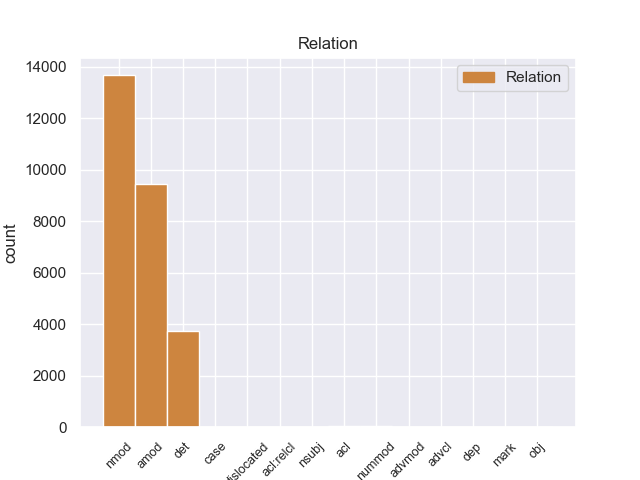
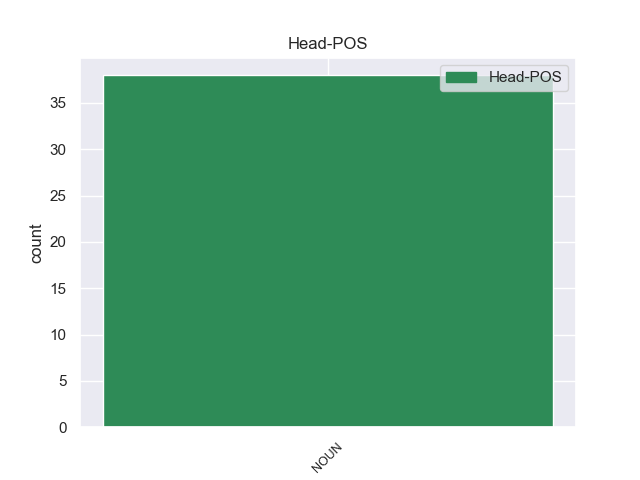
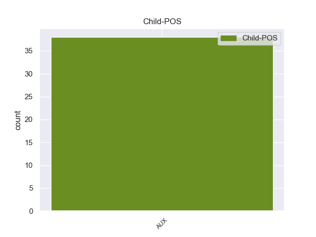

Distribution of features within this leaf



Agreement Rules sorted by frequency.
- When the dependent token is the nominal modifier(nmod) of the head token, and the head token is NOUN and the dependent token is ADP.
1 उन्होंने _ _ _ _ 0 _ _ _
2 यहां _ _ _ _ 0 _ _ _
3 वेटिकन _ _ _ _ 0 _ _ _
4 दूतावास _ _ _ _ 0 _ _ _
5 में _ _ _ _ 0 _ _ _
6 एक _ _ _ _ 0 _ _ _
7 शोक _ _ _ _ 0 _ _ _
8 पुस्तिका _ _ _ _ 0 _ _ _
9 पर _ _ _ _ 0 _ _ _
10 हस्ताक्षर _ _ _ _ 0 _ _ _
11 कर _ _ _ _ 0 _ _ _
12 पोप _ _ _ _ 0 _ _ _
13 जॉन _ _ _ _ 0 _ _ _
14 पॉल _ _ _ _ 0 _ _ _
15 द्वितीय _ _ _ _ 0 _ _ _
16 के का ADP PSP AdpType=Post|Case=Acc|Gender=Masc|Number=Sing 17 nmod _ ChunkId=NP6|ChunkType=child|Translit=ke
17 निधन निधन NOUN NN Case=Acc|Gender=Masc|Number=Sing|Person=3 0 _ _ _
18 पर _ _ _ _ 0 _ _ _
19 गहरा _ _ _ _ 0 _ _ _
20 दुख _ _ _ _ 0 _ _ _
21 प्रकट _ _ _ _ 0 _ _ _
22 किया _ _ _ _ 0 _ _ _
23 । _ _ _ _ 0 _ _ _
1 उन्होंने _ _ _ _ 0 _ _ _
2 यहां _ _ _ _ 0 _ _ _
3 वेटिकन _ _ _ _ 0 _ _ _
4 दूतावास _ _ _ _ 0 _ _ _
5 में _ _ _ _ 0 _ _ _
6 एक _ _ _ _ 0 _ _ _
7 शोक _ _ _ _ 0 _ _ _
8 पुस्तिका _ _ _ _ 0 _ _ _
9 पर _ _ _ _ 0 _ _ _
10 हस्ताक्षर _ _ _ _ 0 _ _ _
11 कर _ _ _ _ 0 _ _ _
12 पोप _ _ _ _ 0 _ _ _
13 जॉन _ _ _ _ 0 _ _ _
14 पॉल _ _ _ _ 0 _ _ _
15 द्वितीय _ _ _ _ 0 _ _ _
16 के _ _ _ _ 0 _ _ _
17 निधन _ _ _ _ 0 _ _ _
18 पर _ _ _ _ 0 _ _ _
19 गहरा गहरा ADJ JJ Case=Nom|Gender=Masc|Number=Sing 20 amod _ ChunkId=NP8|ChunkType=child|Translit=gaharā
20 दुख दुख NOUN NN Case=Nom|Gender=Masc|Number=Sing|Person=3 0 _ _ _
21 प्रकट _ _ _ _ 0 _ _ _
22 किया _ _ _ _ 0 _ _ _
23 । _ _ _ _ 0 _ _ _
1 इन यह DET DEM Case=Acc|Number=Plur|Person=3|PronType=Dem 3 det _ ChunkId=NP|ChunkType=child|Translit=ina
2 दोनों _ _ _ _ 0 _ _ _
3 देशों देश NOUN NN Case=Acc|Gender=Masc|Number=Plur|Person=3 0 _ _ _
4 के _ _ _ _ 0 _ _ _
5 बीच _ _ _ _ 0 _ _ _
6 रिश्ते _ _ _ _ 0 _ _ _
7 में _ _ _ _ 0 _ _ _
8 सुधार _ _ _ _ 0 _ _ _
9 से _ _ _ _ 0 _ _ _
10 करोड़ों _ _ _ _ 0 _ _ _
11 लोगों _ _ _ _ 0 _ _ _
12 का _ _ _ _ 0 _ _ _
13 भला _ _ _ _ 0 _ _ _
14 होगा _ _ _ _ 0 _ _ _
15 । _ _ _ _ 0 _ _ _
1 उनका _ _ _ _ 0 _ _ _
2 कहना _ _ _ _ 0 _ _ _
3 है _ _ _ _ 0 _ _ _
4 कि _ _ _ _ 0 _ _ _
5 छोटे _ _ _ _ 0 _ _ _
6 शहरों _ _ _ _ 0 _ _ _
7 व _ _ _ _ 0 _ _ _
8 गाँवों _ _ _ _ 0 _ _ _
9 में _ _ _ _ 0 _ _ _
10 रहने _ _ _ _ 0 _ _ _
11 वाले वाला ADP PSP AdpType=Post|Case=Acc|Gender=Masc|Number=Plur 12 amod _ ChunkId=VGNN2|ChunkType=child|Translit=vāle
12 लोगों लोग NOUN NN Case=Acc|Gender=Masc|Number=Plur|Person=3 0 _ _ _
13 को _ _ _ _ 0 _ _ _
14 ट्रेन _ _ _ _ 0 _ _ _
15 के _ _ _ _ 0 _ _ _
16 जरिये _ _ _ _ 0 _ _ _
17 पर्यटन _ _ _ _ 0 _ _ _
18 की _ _ _ _ 0 _ _ _
19 कोई _ _ _ _ 0 _ _ _
20 सुविधा _ _ _ _ 0 _ _ _
21 नहीं _ _ _ _ 0 _ _ _
22 मिलती _ _ _ _ 0 _ _ _
23 । _ _ _ _ 0 _ _ _
1 दोनों दो NUM QC Case=Acc|Number=Plur|NumType=Card 2 nummod _ ChunkId=NP|ChunkType=child|Translit=donoṁ
2 नेताओं नेता NOUN NN Case=Acc|Gender=Masc|Number=Plur|Person=3 0 _ _ _
3 ने _ _ _ _ 0 _ _ _
4 द्विपक्षीय _ _ _ _ 0 _ _ _
5 , _ _ _ _ 0 _ _ _
6 क्षेत्रीय _ _ _ _ 0 _ _ _
7 और _ _ _ _ 0 _ _ _
8 अंतर्राष्ट्रीय _ _ _ _ 0 _ _ _
9 मुद्दों _ _ _ _ 0 _ _ _
10 पर _ _ _ _ 0 _ _ _
11 विचार _ _ _ _ 0 _ _ _
12 - _ _ _ _ 0 _ _ _
13 विमर्श _ _ _ _ 0 _ _ _
14 किया _ _ _ _ 0 _ _ _
15 । _ _ _ _ 0 _ _ _
1 समझौते _ _ _ _ 0 _ _ _
2 के _ _ _ _ 0 _ _ _
3 मुताबिक _ _ _ _ 0 _ _ _
4 कंपनी _ _ _ _ 0 _ _ _
5 के _ _ _ _ 0 _ _ _
6 चार _ _ _ _ 0 _ _ _
7 बरखास्त _ _ _ _ 0 _ _ _
8 यूनियन _ _ _ _ 0 _ _ _
9 नेता _ _ _ _ 0 _ _ _
10 सहित _ _ _ _ 0 _ _ _
11 आंदोलन _ _ _ _ 0 _ _ _
12 में _ _ _ _ 0 _ _ _
13 भाग _ _ _ _ 0 _ _ _
14 लेने _ _ _ _ 0 _ _ _
15 वाले वाला ADP PSP AdpType=Post|Case=Acc|Gender=Masc|Number=Plur 17 acl _ ChunkId=VGNN|ChunkType=child|Translit=vāle
16 सभी _ _ _ _ 0 _ _ _
17 श्रमिकों श्रमिक NOUN NN Case=Acc|Gender=Masc|Number=Plur|Person=3 0 _ _ _
18 को _ _ _ _ 0 _ _ _
19 शनिवार _ _ _ _ 0 _ _ _
20 से _ _ _ _ 0 _ _ _
21 काम _ _ _ _ 0 _ _ _
22 पर _ _ _ _ 0 _ _ _
23 ले _ _ _ _ 0 _ _ _
24 लिया _ _ _ _ 0 _ _ _
25 गया _ _ _ _ 0 _ _ _
26 । _ _ _ _ 0 _ _ _
1 पार्टी _ _ _ _ 0 _ _ _
2 के का ADP PSP AdpType=Post|Case=Nom|Gender=Masc|Number=Sing|Person=3|Polite=Form 4 nsubj _ ChunkId=NP|ChunkType=child|Translit=ke
3 पूर्व _ _ _ _ 0 _ _ _
4 कोषाध्यक्ष कोषाध्यक्ष NOUN NN Case=Nom|Gender=Masc|Number=Sing|Person=3 0 _ _ _
5 सुकुमार _ _ _ _ 0 _ _ _
6 नांबियार _ _ _ _ 0 _ _ _
7 भी _ _ _ _ 0 _ _ _
8 कार्यकारिणी _ _ _ _ 0 _ _ _
9 में _ _ _ _ 0 _ _ _
10 मौजूद _ _ _ _ 0 _ _ _
11 हैं _ _ _ _ 0 _ _ _
12 । _ _ _ _ 0 _ _ _
1 कैग _ _ _ _ 0 _ _ _
2 ने _ _ _ _ 0 _ _ _
3 शुक्रवार _ _ _ _ 0 _ _ _
4 को _ _ _ _ 0 _ _ _
5 संसद _ _ _ _ 0 _ _ _
6 में _ _ _ _ 0 _ _ _
7 पेश _ _ _ _ 0 _ _ _
8 अपनी _ _ _ _ 0 _ _ _
9 रिपोर्ट _ _ _ _ 0 _ _ _
10 में _ _ _ _ 0 _ _ _
11 कहा _ _ _ _ 0 _ _ _
12 कि _ _ _ _ 0 _ _ _
13 मुंबई _ _ _ _ 0 _ _ _
14 के _ _ _ _ 0 _ _ _
15 जुहू _ _ _ _ 0 _ _ _
16 सेंटॉर _ _ _ _ 0 _ _ _
17 और _ _ _ _ 0 _ _ _
18 एअरपोर्ट _ _ _ _ 0 _ _ _
19 सेंटॉर _ _ _ _ 0 _ _ _
20 होटलों _ _ _ _ 0 _ _ _
21 की _ _ _ _ 0 _ _ _
22 बिक्री _ _ _ _ 0 _ _ _
23 एकमात्र _ _ _ _ 0 _ _ _
24 बोली _ _ _ _ 0 _ _ _
25 के _ _ _ _ 0 _ _ _
26 आधार _ _ _ _ 0 _ _ _
27 पर _ _ _ _ 0 _ _ _
28 की _ _ _ _ 0 _ _ _
29 गई _ _ _ _ 0 _ _ _
30 थी _ _ _ _ 0 _ _ _
31 , _ _ _ _ 0 _ _ _
32 जबकि _ _ _ _ 0 _ _ _
33 इसे _ _ _ _ 0 _ _ _
34 कंपटीटिव _ _ _ _ 0 _ _ _
35 बिडिंग _ _ _ _ 0 _ _ _
36 ( _ _ _ _ 0 _ _ _
37 प्रतिस्पर्धात्मक _ _ _ _ 0 _ _ _
38 बोली _ _ _ _ 0 _ _ _
39 ) _ _ _ _ 0 _ _ _
40 के का ADP PSP AdpType=Post|Case=Acc|Gender=Masc|Number=Sing 41 dislocated _ ChunkId=FRAGP|ChunkType=head|Translit=ke
41 आधार आधार NOUN NN Case=Acc|Gender=Masc|Number=Sing|Person=3 0 _ _ _
42 पर _ _ _ _ 0 _ _ _
43 किया _ _ _ _ 0 _ _ _
44 जाना _ _ _ _ 0 _ _ _
45 चाहिए _ _ _ _ 0 _ _ _
46 था _ _ _ _ 0 _ _ _
47 । _ _ _ _ 0 _ _ _
1 ब्रेमर _ _ _ _ 0 _ _ _
2 ने _ _ _ _ 0 _ _ _
3 अमेरिका _ _ _ _ 0 _ _ _
4 के _ _ _ _ 0 _ _ _
5 सैनिक _ _ _ _ 0 _ _ _
6 विमान _ _ _ _ 0 _ _ _
7 सी _ _ _ _ 0 _ _ _
8 - _ _ _ _ 0 _ _ _
9 130 _ _ _ _ 0 _ _ _
10 से _ _ _ _ 0 _ _ _
11 रवाना _ _ _ _ 0 _ _ _
12 होने _ _ _ _ 0 _ _ _
13 से _ _ _ _ 0 _ _ _
14 पहले _ _ _ _ 0 _ _ _
15 सालेह _ _ _ _ 0 _ _ _
16 से _ _ _ _ 0 _ _ _
17 हाथ _ _ _ _ 0 _ _ _
18 मिलाया _ _ _ _ 0 _ _ _
19 और _ _ _ _ 0 _ _ _
20 वहां _ _ _ _ 0 _ _ _
21 मौजूद मौजूद ADJ JJ Case=Acc 22 advmod _ ChunkId=JJP2|ChunkType=head|Translit=maujūda
22 पत्रकारों पत्रकार NOUN NN Case=Acc|Gender=Masc|Number=Plur|Person=3 0 _ _ _
23 से _ _ _ _ 0 _ _ _
24 बिना _ _ _ _ 0 _ _ _
25 कोई _ _ _ _ 0 _ _ _
26 बात _ _ _ _ 0 _ _ _
27 किए _ _ _ _ 0 _ _ _
28 वह _ _ _ _ 0 _ _ _
29 रवाना _ _ _ _ 0 _ _ _
30 हो _ _ _ _ 0 _ _ _
31 गए _ _ _ _ 0 _ _ _
32 । _ _ _ _ 0 _ _ _
1 बारामुला _ _ _ _ 0 _ _ _
2 जिले _ _ _ _ 0 _ _ _
3 में _ _ _ _ 0 _ _ _
4 सोपोर _ _ _ _ 0 _ _ _
5 की _ _ _ _ 0 _ _ _
6 एक _ _ _ _ 0 _ _ _
7 मस्जिद _ _ _ _ 0 _ _ _
8 में _ _ _ _ 0 _ _ _
9 छिपे छिप VERB VM Aspect=Perf|Case=Acc|Gender=Masc|Number=Plur|VerbForm=Part 10 acl _ ChunkId=VGNF|ChunkType=head|Tam=yA|Translit=chipe|Vib=या
10 आतंकियों आतंकी NOUN NN Case=Acc|Gender=Masc|Number=Plur|Person=3 0 _ _ _
11 की _ _ _ _ 0 _ _ _
12 गोली _ _ _ _ 0 _ _ _
13 से _ _ _ _ 0 _ _ _
14 जम्मू _ _ _ _ 0 _ _ _
15 - _ _ _ _ 0 _ _ _
16 कश्मीर _ _ _ _ 0 _ _ _
17 पुलिस _ _ _ _ 0 _ _ _
18 के _ _ _ _ 0 _ _ _
19 स्पेशल _ _ _ _ 0 _ _ _
20 ऑपरेशन _ _ _ _ 0 _ _ _
21 ग्रुप _ _ _ _ 0 _ _ _
22 के _ _ _ _ 0 _ _ _
23 दो _ _ _ _ 0 _ _ _
24 पुलिसकर्मी _ _ _ _ 0 _ _ _
25 शहीद _ _ _ _ 0 _ _ _
26 हो _ _ _ _ 0 _ _ _
27 गए _ _ _ _ 0 _ _ _
28 । _ _ _ _ 0 _ _ _
1 इसके _ _ _ _ 0 _ _ _
2 अलावा _ _ _ _ 0 _ _ _
3 कैबिनेट _ _ _ _ 0 _ _ _
4 ने _ _ _ _ 0 _ _ _
5 राष्ट्रीय _ _ _ _ 0 _ _ _
6 अल्पसंख्यक _ _ _ _ 0 _ _ _
7 आयोग _ _ _ _ 0 _ _ _
8 को _ _ _ _ 0 _ _ _
9 संवैधानिक _ _ _ _ 0 _ _ _
10 दर्जा _ _ _ _ 0 _ _ _
11 देने दे VERB VM Case=Acc|VerbForm=Inf 27 nmod _ ChunkId=VGNN|ChunkType=head|Tam=nA|Translit=dene|Vib=ना
12 और _ _ _ _ 0 _ _ _
13 इस _ _ _ _ 0 _ _ _
14 संबंध _ _ _ _ 0 _ _ _
15 में _ _ _ _ 0 _ _ _
16 संविधान _ _ _ _ 0 _ _ _
17 में _ _ _ _ 0 _ _ _
18 संशोधन _ _ _ _ 0 _ _ _
19 के _ _ _ _ 0 _ _ _
20 लिए _ _ _ _ 0 _ _ _
21 संसद _ _ _ _ 0 _ _ _
22 में _ _ _ _ 0 _ _ _
23 विधेयक _ _ _ _ 0 _ _ _
24 लाने _ _ _ _ 0 _ _ _
25 के _ _ _ _ 0 _ _ _
26 एक _ _ _ _ 0 _ _ _
27 प्रस्ताव प्रस्ताव NOUN NN Case=Acc|Gender=Masc|Number=Sing|Person=3 0 _ _ _
28 को _ _ _ _ 0 _ _ _
29 हरी _ _ _ _ 0 _ _ _
30 झंडी _ _ _ _ 0 _ _ _
31 दे _ _ _ _ 0 _ _ _
32 दी _ _ _ _ 0 _ _ _
33 । _ _ _ _ 0 _ _ _
1 रिवर्स _ _ _ _ 0 _ _ _
2 रेपो _ _ _ _ 0 _ _ _
3 रेट _ _ _ _ 0 _ _ _
4 वह _ _ _ _ 0 _ _ _
5 दर _ _ _ _ 0 _ _ _
6 है _ _ _ _ 0 _ _ _
7 जिस _ _ _ _ 0 _ _ _
8 पर _ _ _ _ 0 _ _ _
9 बैंकों _ _ _ _ 0 _ _ _
10 को _ _ _ _ 0 _ _ _
11 आरबीआई _ _ _ _ 0 _ _ _
12 के _ _ _ _ 0 _ _ _
13 पास _ _ _ _ 0 _ _ _
14 जमा जमा ADJ JJ Case=Acc 16 acl _ ChunkId=JJP|ChunkType=head|Translit=jamā
15 अतिरिक्त _ _ _ _ 0 _ _ _
16 रकम रकम NOUN NN Case=Acc|Gender=Fem|Number=Sing|Person=3 0 _ _ _
17 पर _ _ _ _ 0 _ _ _
18 ब्याज _ _ _ _ 0 _ _ _
19 मिलता _ _ _ _ 0 _ _ _
20 है _ _ _ _ 0 _ _ _
21 । _ _ _ _ 0 _ _ _
1 इसीलिए _ _ _ _ 0 _ _ _
2 सभी _ _ _ _ 0 _ _ _
3 मुद्दों _ _ _ _ 0 _ _ _
4 को _ _ _ _ 0 _ _ _
5 रफा _ _ _ _ 0 _ _ _
6 - _ _ _ _ 0 _ _ _
7 दफा _ _ _ _ 0 _ _ _
8 करने _ _ _ _ 0 _ _ _
9 के _ _ _ _ 0 _ _ _
10 लिए _ _ _ _ 0 _ _ _
11 नक़वी _ _ _ _ 0 _ _ _
12 आडवाणी _ _ _ _ 0 _ _ _
13 से _ _ _ _ 0 _ _ _
14 आमने आमने NOUN NSTC AdpType=Post|Case=Nom|Gender=Masc|Number=Sing|Person=3 0 _ _ _
15 - _ _ _ _ 0 _ _ _
16 सामने सामने ADV NST AdpType=Post|Case=Nom|Gender=Masc|Number=Sing|Person=3 14 case _ AltTag=ADV-NOUN|ChunkId=NP6|ChunkType=head|Translit=sāmane
17 मिलना _ _ _ _ 0 _ _ _
18 चाहते _ _ _ _ 0 _ _ _
19 थे _ _ _ _ 0 _ _ _
20 । _ _ _ _ 0 _ _ _
1 सम्मेलन _ _ _ _ 0 _ _ _
2 में _ _ _ _ 0 _ _ _
3 जम्मू _ _ _ _ 0 _ _ _
4 - _ _ _ _ 0 _ _ _
5 कश्मीर _ _ _ _ 0 _ _ _
6 के _ _ _ _ 0 _ _ _
7 अलावा _ _ _ _ 0 _ _ _
8 लद्दाख _ _ _ _ 0 _ _ _
9 व _ _ _ _ 0 _ _ _
10 कारगिल _ _ _ _ 0 _ _ _
11 से _ _ _ _ 0 _ _ _
12 ताल्लुक _ _ _ _ 0 _ _ _
13 रखने _ _ _ _ 0 _ _ _
14 वाले वाला ADP PSP AdpType=Post|Case=Acc|Gender=Masc|Number=Plur 16 acl:relcl _ ChunkId=VGNN|ChunkType=child|Translit=vāle
15 सियासी _ _ _ _ 0 _ _ _
16 नेताओं नेता NOUN NN Case=Acc|Gender=Masc|Number=Plur|Person=3 0 _ _ _
17 ने _ _ _ _ 0 _ _ _
18 भी _ _ _ _ 0 _ _ _
19 हिस्सा _ _ _ _ 0 _ _ _
20 लिया _ _ _ _ 0 _ _ _
21 । _ _ _ _ 0 _ _ _
1 इस _ _ _ _ 0 _ _ _
2 बीच _ _ _ _ 0 _ _ _
3 बारिश _ _ _ _ 0 _ _ _
4 नहीं _ _ _ _ 0 _ _ _
5 होने _ _ _ _ 0 _ _ _
6 के _ _ _ _ 0 _ _ _
7 कारण _ _ _ _ 0 _ _ _
8 गर्मी _ _ _ _ 0 _ _ _
9 ने _ _ _ _ 0 _ _ _
10 फिर _ _ _ _ 0 _ _ _
11 अपना _ _ _ _ 0 _ _ _
12 कहर _ _ _ _ 0 _ _ _
13 बरपाना बरपा VERB VM Case=Nom|VerbForm=Inf 14 amod _ ChunkId=VGNN2|ChunkType=head|Tam=nA|Translit=barapānā|Vib=ना
14 शुरू शुरू NOUN NN Case=Nom|Gender=Masc|Number=Sing|Person=3 0 _ _ _
15 कर _ _ _ _ 0 _ _ _
16 दिया _ _ _ _ 0 _ _ _
17 तथा _ _ _ _ 0 _ _ _
18 कई _ _ _ _ 0 _ _ _
19 स्थानों _ _ _ _ 0 _ _ _
20 पर _ _ _ _ 0 _ _ _
21 तापमान _ _ _ _ 0 _ _ _
22 ४० _ _ _ _ 0 _ _ _
23 डिग्री _ _ _ _ 0 _ _ _
24 सेल्सियस _ _ _ _ 0 _ _ _
25 से _ _ _ _ 0 _ _ _
26 ऊपर _ _ _ _ 0 _ _ _
27 पहुंच _ _ _ _ 0 _ _ _
28 गया _ _ _ _ 0 _ _ _
29 है _ _ _ _ 0 _ _ _
30 । _ _ _ _ 0 _ _ _
1 कैबिनेट _ _ _ _ 0 _ _ _
2 की _ _ _ _ 0 _ _ _
3 बैठक _ _ _ _ 0 _ _ _
4 के _ _ _ _ 0 _ _ _
5 बाद _ _ _ _ 0 _ _ _
6 सूचना _ _ _ _ 0 _ _ _
7 और _ _ _ _ 0 _ _ _
8 प्रसारण _ _ _ _ 0 _ _ _
9 मंत्री _ _ _ _ 0 _ _ _
10 एस _ _ _ _ 0 _ _ _
11 जयपाल _ _ _ _ 0 _ _ _
12 रेड्डी _ _ _ _ 0 _ _ _
13 ने _ _ _ _ 0 _ _ _
14 बताया _ _ _ _ 0 _ _ _
15 कि _ _ _ _ 0 _ _ _
16 इसमें _ _ _ _ 0 _ _ _
17 उपभोक्ताओं _ _ _ _ 0 _ _ _
18 के _ _ _ _ 0 _ _ _
19 हितों _ _ _ _ 0 _ _ _
20 के _ _ _ _ 0 _ _ _
21 संरक्षण _ _ _ _ 0 _ _ _
22 के _ _ _ _ 0 _ _ _
23 लिए _ _ _ _ 0 _ _ _
24 पेट्रोलियम _ _ _ _ 0 _ _ _
25 और _ _ _ _ 0 _ _ _
26 प्राकृतिक _ _ _ _ 0 _ _ _
27 गैस गैस NOUN NN Case=Acc|Gender=Fem|Number=Sing|Person=3 0 _ _ _
28 जैसे जैसा PART RP Case=Acc|Gender=Masc 27 dep _ ChunkId=NP9|ChunkType=child|Translit=jaise
29 पेट्रोलियम _ _ _ _ 0 _ _ _
30 उत्पादों _ _ _ _ 0 _ _ _
31 के _ _ _ _ 0 _ _ _
32 लिए _ _ _ _ 0 _ _ _
33 नियामक _ _ _ _ 0 _ _ _
34 बोर्ड _ _ _ _ 0 _ _ _
35 बनाने _ _ _ _ 0 _ _ _
36 का _ _ _ _ 0 _ _ _
37 प्रस्ताव _ _ _ _ 0 _ _ _
38 दिया _ _ _ _ 0 _ _ _
39 गया _ _ _ _ 0 _ _ _
40 है _ _ _ _ 0 _ _ _
41 । _ _ _ _ 0 _ _ _
1 राव _ _ _ _ 0 _ _ _
2 की का ADP PSP AdpType=Post|Case=Nom|Gender=Fem|Number=Sing 11 obj _ ChunkId=NP|ChunkType=child|Translit=kī
3 बीते _ _ _ _ 0 _ _ _
4 हफ्ते _ _ _ _ 0 _ _ _
5 रालोद _ _ _ _ 0 _ _ _
6 प्रमुख _ _ _ _ 0 _ _ _
7 अजित _ _ _ _ 0 _ _ _
8 सिंह _ _ _ _ 0 _ _ _
9 से _ _ _ _ 0 _ _ _
10 भी _ _ _ _ 0 _ _ _
11 मुलाकात मुलाकात NOUN NN Case=Nom|Gender=Fem|Number=Sing|Person=3 0 _ _ _
12 हुई _ _ _ _ 0 _ _ _
13 बताई _ _ _ _ 0 _ _ _
14 जाती _ _ _ _ 0 _ _ _
15 है _ _ _ _ 0 _ _ _
16 । _ _ _ _ 0 _ _ _
1 वामपंथियों _ _ _ _ 0 _ _ _
2 का _ _ _ _ 0 _ _ _
3 कहना _ _ _ _ 0 _ _ _
4 है _ _ _ _ 0 _ _ _
5 कि _ _ _ _ 0 _ _ _
6 ईरान _ _ _ _ 0 _ _ _
7 हमारा _ _ _ _ 0 _ _ _
8 पारंपरिक _ _ _ _ 0 _ _ _
9 मित्र _ _ _ _ 0 _ _ _
10 देश _ _ _ _ 0 _ _ _
11 है _ _ _ _ 0 _ _ _
12 और _ _ _ _ 0 _ _ _
13 मध्य _ _ _ _ 0 _ _ _
14 पूर्व पूर्व ADJ JJ Case=Acc|Gender=Masc|Number=Sing|Person=3 18 nmod _ ChunkId=NP5|ChunkType=head|Translit=pūrva
15 व _ _ _ _ 0 _ _ _
16 खाड़ी _ _ _ _ 0 _ _ _
17 के _ _ _ _ 0 _ _ _
18 देशों देश NOUN NN Case=Acc|Gender=Masc|Number=Plur|Person=3 0 _ _ _
19 में _ _ _ _ 0 _ _ _
20 किसी _ _ _ _ 0 _ _ _
21 प्रकार _ _ _ _ 0 _ _ _
22 की _ _ _ _ 0 _ _ _
23 क्षेत्रीय _ _ _ _ 0 _ _ _
24 अस्थिरता _ _ _ _ 0 _ _ _
25 का _ _ _ _ 0 _ _ _
26 हमारे _ _ _ _ 0 _ _ _
27 देश _ _ _ _ 0 _ _ _
28 पर _ _ _ _ 0 _ _ _
29 असर _ _ _ _ 0 _ _ _
30 पड़ेगा _ _ _ _ 0 _ _ _
31 । _ _ _ _ 0 _ _ _
1 श्रीकुमार _ _ _ _ 0 _ _ _
2 के _ _ _ _ 0 _ _ _
3 वकील _ _ _ _ 0 _ _ _
4 का _ _ _ _ 0 _ _ _
5 कहना _ _ _ _ 0 _ _ _
6 है _ _ _ _ 0 _ _ _
7 जब _ _ _ _ 0 _ _ _
8 गुजरात _ _ _ _ 0 _ _ _
9 सरकार _ _ _ _ 0 _ _ _
10 ने _ _ _ _ 0 _ _ _
11 पहले पहले ADV NST AdpType=Post|Case=Nom|Gender=Masc|Number=Sing|Person=3 13 amod _ AltTag=ADV-NOUN|ChunkId=NP5|ChunkType=head|Translit=pahale
12 तीन _ _ _ _ 0 _ _ _
13 बार बार NOUN NN Case=Nom|Gender=Fem|Number=Plur|Person=3 0 _ _ _
14 पदोन्नत _ _ _ _ 0 _ _ _
15 करते _ _ _ _ 0 _ _ _
16 समय _ _ _ _ 0 _ _ _
17 लंबित _ _ _ _ 0 _ _ _
18 आपराधिक _ _ _ _ 0 _ _ _
19 मामले _ _ _ _ 0 _ _ _
20 पर _ _ _ _ 0 _ _ _
21 विचार _ _ _ _ 0 _ _ _
22 नहीं _ _ _ _ 0 _ _ _
23 किया _ _ _ _ 0 _ _ _
24 , _ _ _ _ 0 _ _ _
25 तो _ _ _ _ 0 _ _ _
26 इस _ _ _ _ 0 _ _ _
27 बार _ _ _ _ 0 _ _ _
28 यह _ _ _ _ 0 _ _ _
29 मामला _ _ _ _ 0 _ _ _
30 इतना _ _ _ _ 0 _ _ _
31 महत्वपूर्ण _ _ _ _ 0 _ _ _
32 क्यों _ _ _ _ 0 _ _ _
33 माना _ _ _ _ 0 _ _ _
34 जा _ _ _ _ 0 _ _ _
35 रहा _ _ _ _ 0 _ _ _
36 है _ _ _ _ 0 _ _ _
37 । _ _ _ _ 0 _ _ _
1 २००१ _ _ _ _ 0 _ _ _
2 में _ _ _ _ 0 _ _ _
3 सत्ता _ _ _ _ 0 _ _ _
4 के _ _ _ _ 0 _ _ _
5 गलियारों _ _ _ _ 0 _ _ _
6 व _ _ _ _ 0 _ _ _
7 सेना _ _ _ _ 0 _ _ _
8 में _ _ _ _ 0 _ _ _
9 हथियारों _ _ _ _ 0 _ _ _
10 के _ _ _ _ 0 _ _ _
11 दलालों _ _ _ _ 0 _ _ _
12 को _ _ _ _ 0 _ _ _
13 बेनकाब _ _ _ _ 0 _ _ _
14 करने _ _ _ _ 0 _ _ _
15 के का ADP PSP AdpType=Post|Case=Acc|Gender=Masc|Number=Sing 18 advcl _ ChunkId=VGNN|ChunkType=child|Translit=ke
16 तहलका _ _ _ _ 0 _ _ _
17 के _ _ _ _ 0 _ _ _
18 अभियान अभियान NOUN NN Case=Acc|Gender=Masc|Number=Sing|Person=3 0 _ _ _
19 के _ _ _ _ 0 _ _ _
20 तहत _ _ _ _ 0 _ _ _
21 बिछाए _ _ _ _ 0 _ _ _
22 जाल _ _ _ _ 0 _ _ _
23 में _ _ _ _ 0 _ _ _
24 चौधरी _ _ _ _ 0 _ _ _
25 फंस _ _ _ _ 0 _ _ _
26 गए _ _ _ _ 0 _ _ _
27 थे _ _ _ _ 0 _ _ _
28 । _ _ _ _ 0 _ _ _
1 इसमें _ _ _ _ 0 _ _ _
2 यह _ _ _ _ 0 _ _ _
3 कहा _ _ _ _ 0 _ _ _
4 गया _ _ _ _ 0 _ _ _
5 है _ _ _ _ 0 _ _ _
6 कि _ _ _ _ 0 _ _ _
7 तीस _ _ _ _ 0 _ _ _
8 लाख _ _ _ _ 0 _ _ _
9 या _ _ _ _ 0 _ _ _
10 उससे _ _ _ _ 0 _ _ _
11 अधिक _ _ _ _ 0 _ _ _
12 कीमत _ _ _ _ 0 _ _ _
13 वाली वाला ADP PSP AdpType=Post|Case=Acc|Gender=Fem|Number=Sing 14 nummod _ ChunkId=NP5|ChunkType=child|Translit=vālī
14 संपत्ति संपत्ति NOUN NN Case=Acc|Gender=Fem|Number=Sing|Person=3 0 _ _ _
15 की _ _ _ _ 0 _ _ _
16 रजिस्ट्री _ _ _ _ 0 _ _ _
17 तभी _ _ _ _ 0 _ _ _
18 की _ _ _ _ 0 _ _ _
19 जाए _ _ _ _ 0 _ _ _
20 जब _ _ _ _ 0 _ _ _
21 खरीददार _ _ _ _ 0 _ _ _
22 और _ _ _ _ 0 _ _ _
23 बेचने _ _ _ _ 0 _ _ _
24 वाला _ _ _ _ 0 _ _ _
25 निर्धारित _ _ _ _ 0 _ _ _
26 फार्म _ _ _ _ 0 _ _ _
27 भरकर _ _ _ _ 0 _ _ _
28 देगा _ _ _ _ 0 _ _ _
29 । _ _ _ _ 0 _ _ _
Disagree Examples:
1 विशाल _ _ _ _ 0 _ _ _
2 क्षेत्र _ _ _ _ 0 _ _ _
3 में _ _ _ _ 0 _ _ _
4 फैले _ _ _ _ 0 _ _ _
5 इस _ _ _ _ 0 _ _ _
6 भवन _ _ _ _ 0 _ _ _
7 के _ _ _ _ 0 _ _ _
8 आस आस NOUN NSTC AdpType=Post|Case=Nom|Gender=Masc|Number=Sing|Person=3 0 _ _ _
9 - _ _ _ _ 0 _ _ _
10 पास पास ADP NST AdpType=Post|Case=Acc|Gender=Masc|Number=Sing|Person=3 8 case _ AltTag=ADP-NOUN|ChunkId=NP2|ChunkType=child|Translit=pāsa
11 का _ _ _ _ 0 _ _ _
12 प्राकृतिक _ _ _ _ 0 _ _ _
13 सौंदर्य _ _ _ _ 0 _ _ _
14 इसे _ _ _ _ 0 _ _ _
15 और _ _ _ _ 0 _ _ _
16 भी _ _ _ _ 0 _ _ _
17 भव्य _ _ _ _ 0 _ _ _
18 बनाता _ _ _ _ 0 _ _ _
19 है _ _ _ _ 0 _ _ _
20 । _ _ _ _ 0 _ _ _
1 कहा _ _ _ _ 0 _ _ _
2 जाता _ _ _ _ 0 _ _ _
3 है _ _ _ _ 0 _ _ _
4 कि _ _ _ _ 0 _ _ _
5 रानी _ _ _ _ 0 _ _ _
6 के का ADP PSP AdpType=Post|Case=Acc|Gender=Masc|Number=Sing 7 nmod _ ChunkId=NP|ChunkType=child|Translit=ke
7 प्रतिदिन प्रतिदिन NOUN NN Case=Nom|Gender=Masc|Number=Sing|Person=3 0 _ _ _
8 नर्मदा _ _ _ _ 0 _ _ _
9 दर्शन _ _ _ _ 0 _ _ _
10 के _ _ _ _ 0 _ _ _
11 पश्चात _ _ _ _ 0 _ _ _
12 अन्न _ _ _ _ 0 _ _ _
13 - _ _ _ _ 0 _ _ _
14 जल _ _ _ _ 0 _ _ _
15 ग्रहण _ _ _ _ 0 _ _ _
16 करने _ _ _ _ 0 _ _ _
17 की _ _ _ _ 0 _ _ _
18 आदत _ _ _ _ 0 _ _ _
19 के _ _ _ _ 0 _ _ _
20 कारण _ _ _ _ 0 _ _ _
21 बाज _ _ _ _ 0 _ _ _
22 बहादुर _ _ _ _ 0 _ _ _
23 ने _ _ _ _ 0 _ _ _
24 यह _ _ _ _ 0 _ _ _
25 ऊँचा _ _ _ _ 0 _ _ _
26 महल _ _ _ _ 0 _ _ _
27 बनवाया _ _ _ _ 0 _ _ _
28 था _ _ _ _ 0 _ _ _
29 । _ _ _ _ 0 _ _ _
1 इस यह DET DEM Case=Acc|Number=Sing|Person=3|PronType=Dem 2 det _ ChunkId=NP|ChunkType=child|Translit=isa
2 समय समय NOUN NN Case=Nom|Gender=Masc|Number=Sing|Person=3 0 _ _ _
3 यहाँ _ _ _ _ 0 _ _ _
4 पर्यटकों _ _ _ _ 0 _ _ _
5 का _ _ _ _ 0 _ _ _
6 मेला _ _ _ _ 0 _ _ _
7 लगा _ _ _ _ 0 _ _ _
8 रहता _ _ _ _ 0 _ _ _
9 है _ _ _ _ 0 _ _ _
10 । _ _ _ _ 0 _ _ _
1 यहाँ _ _ _ _ 0 _ _ _
2 बाघ _ _ _ _ 0 _ _ _
3 के _ _ _ _ 0 _ _ _
4 अलावा _ _ _ _ 0 _ _ _
5 तेंदुआ _ _ _ _ 0 _ _ _
6 , _ _ _ _ 0 _ _ _
7 हिरण _ _ _ _ 0 _ _ _
8 , _ _ _ _ 0 _ _ _
9 चीतल _ _ _ _ 0 _ _ _
10 , _ _ _ _ 0 _ _ _
11 नीलगाय _ _ _ _ 0 _ _ _
12 , _ _ _ _ 0 _ _ _
13 जंगली _ _ _ _ 0 _ _ _
14 सूअर _ _ _ _ 0 _ _ _
15 और _ _ _ _ 0 _ _ _
16 कई _ _ _ _ 0 _ _ _
17 तरह _ _ _ _ 0 _ _ _
18 के का ADP PSP AdpType=Post|Case=Acc|Gender=Masc|Number=Plur 19 nmod _ ChunkId=NP8|ChunkType=child|Translit=ke
19 पक्षी पक्षी NOUN NN Case=Nom|Gender=Masc|Number=Plur|Person=3 0 _ _ _
20 बड़ी _ _ _ _ 0 _ _ _
21 संख्या _ _ _ _ 0 _ _ _
22 में _ _ _ _ 0 _ _ _
23 हैं _ _ _ _ 0 _ _ _
24 । _ _ _ _ 0 _ _ _
1 मुगल _ _ _ _ 0 _ _ _
2 शासक _ _ _ _ 0 _ _ _
3 शाह _ _ _ _ 0 _ _ _
4 आलम _ _ _ _ 0 _ _ _
5 ने _ _ _ _ 0 _ _ _
6 1754 _ _ _ _ 0 _ _ _
7 में _ _ _ _ 0 _ _ _
8 जयपुर _ _ _ _ 0 _ _ _
9 के का ADP PSP AdpType=Post|Case=Acc|Gender=Masc|Number=Sing 10 nmod _ ChunkId=NP3|ChunkType=child|Translit=ke
10 महाराजा महाराजा NOUN NN Case=Nom|Gender=Masc|Number=Sing|Person=3 0 _ _ _
11 सवाई _ _ _ _ 0 _ _ _
12 माधोसिंह _ _ _ _ 0 _ _ _
13 प्रथम _ _ _ _ 0 _ _ _
14 को _ _ _ _ 0 _ _ _
15 यह _ _ _ _ 0 _ _ _
16 किला _ _ _ _ 0 _ _ _
17 पुरस्कार _ _ _ _ 0 _ _ _
18 स्वरूप _ _ _ _ 0 _ _ _
19 दिया _ _ _ _ 0 _ _ _
20 । _ _ _ _ 0 _ _ _